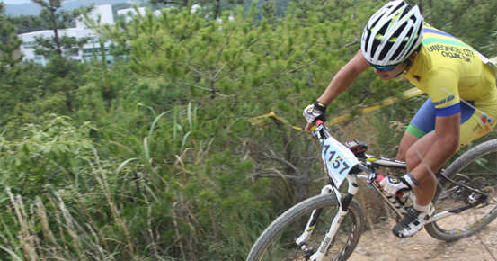
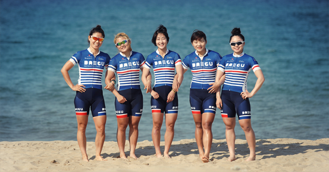
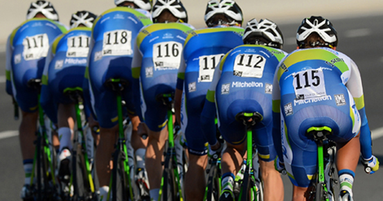
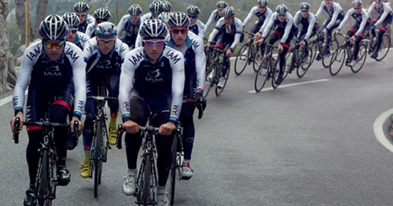
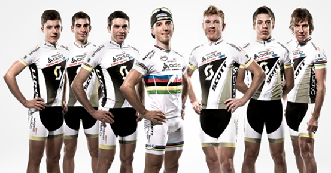
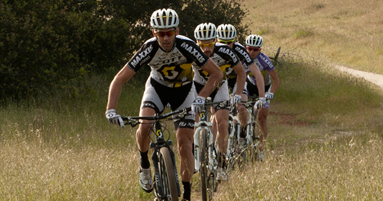
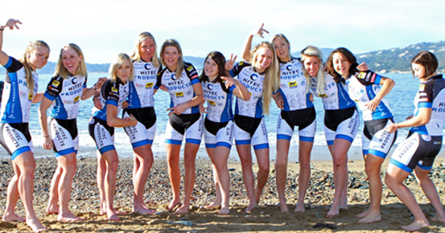
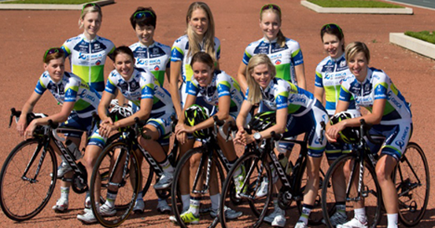

BIKE TEAM
-
 INTRODUCEBTEC MTB 국가대표
BTEC는 Bike Training Education Center의 약자로 엘리트 선수 육성을 통한 안전하고 올바른 자전거 문화 정착과 산업의 활성화를 위해 교육사업의 한 분야의 선구자가 되기 위해 설립하게 되었고, 올바른 자전거 문화 정착의 필요성과 관련하여 성장하기 위한 자전거 교육 업체입니다.
-
 INTRODUCE대구시체육회 여자사이클팀
구성은, 김원경, 임다빈, 유종민, 김석란 이렇게 5명의 선수로 구성되어 있는 대구시 체육회 여자사이클팀은 한국 여자 사이클 선수로서 첫 프로무대에 진출했던 구성은 선수를 비롯하여 훌륭한 선수들이 각종 대회에서 뛰어난 성적을 거두고 있는 작지만 강한 팀입니다.
*헤븐워드(cooldp)님이 촬영한 사진입니다. -
 INTRODUCEOrica-GreenEDGE & 투르 드 코리아 2015
스캇스포츠의 후원을 받으며 국제 사이클링에서 새로운 컨셉을 담은 Orica-GreenEDGE 사이클링 팀을 소개합니다. Orica-GreenEDGE 모델은 프로페셔널 사이클링을 넘어 영향력과 공헌으로 사이클링 사이클링 스포츠 판도를 교체할 것입니다. Orica-GreenEdge팀은 2015.06.07~14까지 한국에서 열리는 투르 드 코리아 2015에 출전합니다.
-
 INTRODUCEIAM Cycling
IAM 사이클링은 프로 컨티넨탈 등급에 등록된 유일한 프로페셔널 스위스 사이클링팀입니다. Thomas LOFKVIST, Heinrich HAUSSLER 그리고 스위스 출신인 Johann TSCHOPP와 같은 정상급 선수들로 이루어진 이 팀은 스캇스포츠와 함께 2013년 부터 강대한 포부를 안고 출발합니다. 팀과 스캇스포츠는 제품개발과 마케팅 전개 뿐 아니라 월드투어에서 선전을 향해 긴밀히 협조할 것입니다.
-
 INTRODUCESCOTT Swisspower
2002년, SCOTT Swisspower Mountain Bike Team이라는 이름 아래 산악자전거 개발 프로젝트의 일환으로 새로운 팀이 탄생했습니다. 이 팀의 컨셉은 팀 리더인 토마스 프리쉬네흐트(Thomas Frischknecht)와 팀 디렉터인 앤디 시리(Andi Seeli)의 양 날개 아래서 스위스의 가장 젋고 능력있는 이들에게 그들의 기술과 실력을 성장시킬 수 있는 기회를 제공하는 것입니다. 이 프로젝트의 운영은 전문성과 높은 경험 그리고 뛰어난 노하우를 전하는 것이며 결과가 그것을 말해줍니다. 플로리안 보겔(Florian Vogel - 유럽챔피언 & 2008년 세계 부챔피언)과 니노 슈터(Nino Schurter - 베이징 올림픽게임 메달리스트, 2008 U23 월드챔피언, 2009 엘리트 월드챔피언, 2010 월드컵 종합 우승)와 같은 라이어들이 주니어로부터 세계적인 선수로 성장하였습니다.
-
 INTRODUCE3Rox Racing
SCOTT - 3Rox Racing Team은 스캇스포츠 북미 XC 레이스 팀입니다. 팀의 주역은 올림피아 2회, US 내셔널 XC 시리즈 챔피언 4회와 캐나다 내셔널 챔피언 10회의 화려한 커리어를 가진 거프 카부쉬(Geoff Kabush)입니다. SCOTT-3Rox팀의 초점은 북미 지역의 행사를 대표하고 스캇의 자전거, 싱크로스의 컴퍼넌트 라인의 개발에 있어 국제적인 역할을 하는 것입니다.
-
 INTRODUCEHitec Products Mistral Home
Hitec Product Mistral Home 팀은 스캇스포츠의 협찬을 받고 있는 국제 여성 로드 사이클림 팀입니다. 노르웨이의 뛰어난 라이더들에게 기회를 제공하는 것이 이 팀의 컨셉입니다. 3명의 내셔널 여성 챔프와 함께 투르 드 프랑스나 투어 오브 카타르와 같은 메이저급 월드와이드 UCI 레이스에서 뛰어난 퍼포먼스를 펼칠 능력을 가지고 있습니다.
-
 INTRODUCEGreenEDGE AIS
스캇스포츠의 후원을 받으며 국제 사이클링에서 새로운 컨셉을 담은 GreedEDGE AIS 사이클링 팀을 소개합니다. GreedEDGE AIS 모델은 프로페셔널 사이클링을 넘어 영향력과 공헌으로 사이클링 스포츠 판도를 교체할 것입니다. 현재 대한민국 출신의 구성은 선수가 이팀에서 활동하고 있습니다.